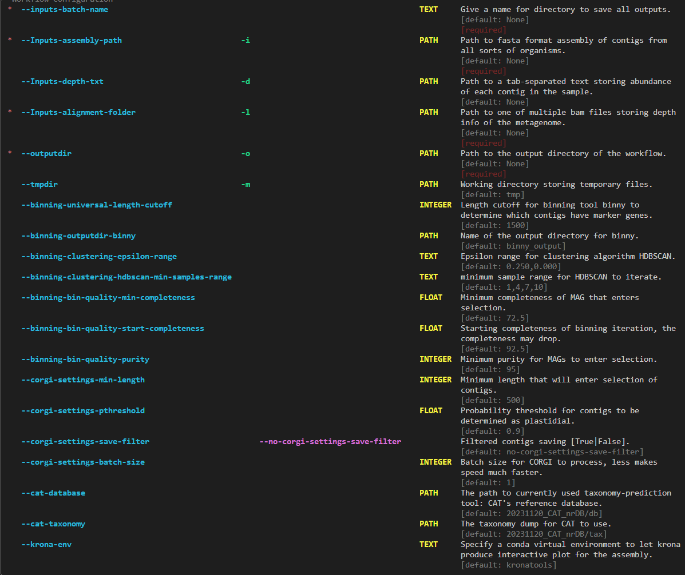

Beginner’s tutorial
Data Input and configuration
The pip version of ChloroScan accepts following arguments:
Among these arguments, only assembly path, depth text, alignment folder and a batch name are required for ChloroScan to run.
Please prepare your assembly in unziped fasta format to allow for processing.
The sequence alignment folder should contain sorted.bam files to map each contig’s sequence coverage in assembly.
An example command for running ChloroScan if depth text file is available:
chloroscan run --Inputs-assembly-path assembly.fasta --Inputs-depth-txt depth.txt --Inputs-batch-name BATCH_NAME --outputdir OUTPUT_DIR --cores N_CORES
An example command for running ChloroScan if depth text file is not available:
chloroscan run --Inputs-assembly-path assembly.fasta --Inputs-batch-name BATCH_NAME --outputdir OUTPUT_DIR --alignment-folder ALIGNMENT_FOLDER
Explaining the non-required arguments
Some parameters are not required, but changing them can impact the outcomes and running processes, here are some instructions.
1. CORGI settings
CORGI is responsible for contig filtering to extract chloroplast contigs. The default device of CORGI is GPU.
--corgi-settings-min-length: Minimum length of contigs to be considered for chloroplast contigs. Default is 500.--corgi-settings-pthreshold: P-value threshold for filtering contigs. Default is 0.90. Bigger value means more stringent filtering.--corgi-settings-save-filtering: Whether to save the filtered contigs using CORGI. Default is False and the customized python scripts in chloroscan could achieve quite fast writing speed.--corgi-settings-batch-size: number of contigs to be processed in one batch. Default is 1. Smaller batch size can reduce memory usage and elevate speed.
2. Binning module settings
--binning-universal-length-cutoff: The length cutoff for all contigs that enters selection regardless of presenting marker genes. Default is 1500.--binning-clustering-epsilon_range: The range of epsilon for HDBSCAN clustering. Default is “0.250,0.000”. Larger range takes more time to finish the clustering.--binning-clustering-hdbscan-min_samples: The minimum number of samples in a cluster. Default is 1,4,7,10. Picking smaller values can lead to more clusters but cluster contents may be spurious.--binning-bin-quality-min_completeness: Minimum completeness for MAGs to enter selection. Default is 72.5.--binning-bin-quality-starting-completeness: Starting completeness for MAGs to enter selection. Default is 92.5, note that the range between starting and min completeness affects the quality selections of bins.--binning-bin-quality-purity: Purity cutoff for MAGs to enter selection. Default is 95.
3. Homology-based taxonomy prediction by CAT
CAT-database: The database used for taxonomy prediction by CAT/BAT, ensure this is an absolute path.CAT-taxonomy: The taxonomy dump file for CAT to use. Ensure this path is an absolute path.
4. Other settings
outputdir: The output directory for the workflow’s results, usually named after batch name.tmpdir: Temporary directory for storing intermediate files. Default is /tmp.
Note
Currently the pip version of chloroscan recommends to use a snakemake virtual environment with snakemake=6.15.5 installed for binny’s module to use. Otherwise the binny module might fail while running.